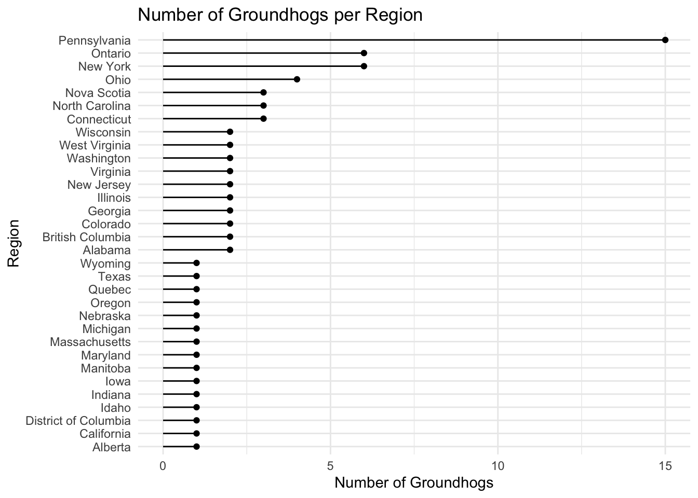
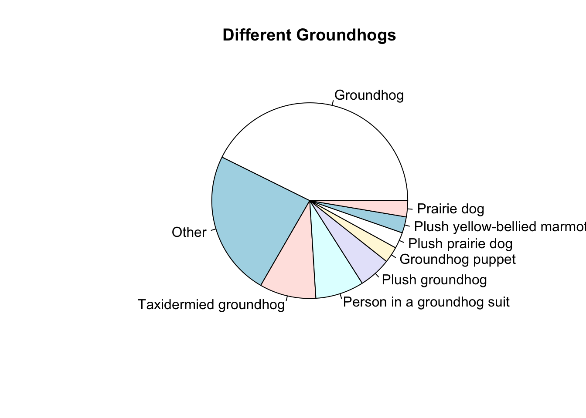
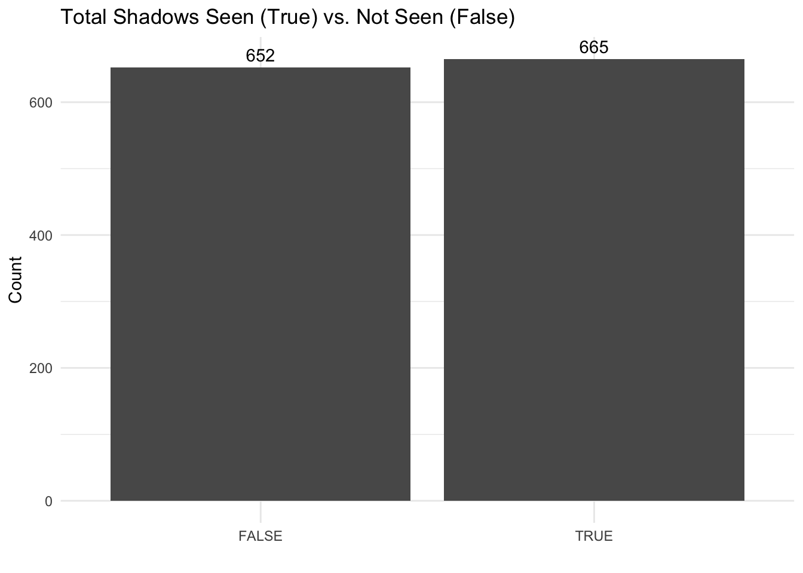
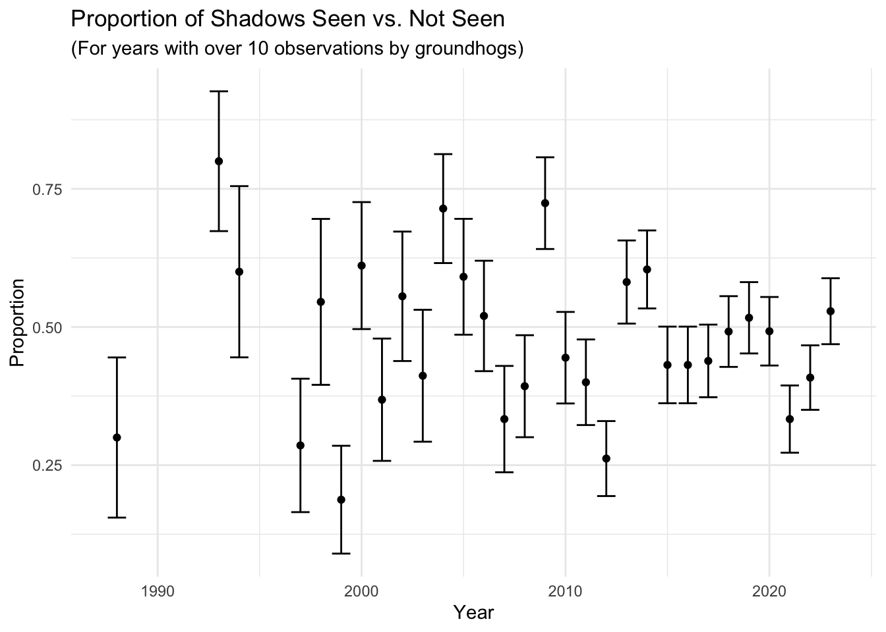

library(tidyverse)Introduction
The datasets I will be looking at contain data on groundhogs day groundhogs and their predictions of whether winter will come or not. In the predictions df there is 1400+ entries of id (groundhog id), year, shadow (T or F), and details. Details is any extra writen info that could add context to the sighting of the shadow. The groudhogs df has 75 entries with the groundhogs ids, information on the groundhogs, and information on the city/region where the groundhog is “from”. I’ll be making some plots to look compare the groundhogs and their predictions. This data is from the January 30th enrty of the tidy-tuesday github page.
tuesdata <- tidytuesdayR::tt_load('2024-01-30')
Downloading file 1 of 2: `predictions.csv`
Downloading file 2 of 2: `groundhogs.csv`groundhogs <- tuesdata$groundhogs
predictions <- tuesdata$predictionsgroundhogs# A tibble: 75 × 17
id slug shortname name city region country latitude longitude source
<dbl> <chr> <chr> <chr> <chr> <chr> <chr> <dbl> <dbl> <chr>
1 1 punxsut… Phil Punx… Punx… Penns… USA 40.9 -79.0 "http…
2 2 octorar… Orphie Octo… Quar… Penns… USA 39.8 -76.1 "http…
3 3 wiarton… Willie Wiar… Wiar… Ontar… Canada 44.7 -81.1 "http…
4 4 jimmy-t… Jimmy Jimm… Sun … Wisco… USA 43.2 -89.2 "http…
5 5 concord… Charlie Conc… Athe… West … USA 37.4 -81.0 "http…
6 6 buckeye… Chuck Buck… Mari… Ohio USA 40.6 -83.1 "http…
7 7 general… Beau Gene… Jack… Georg… USA 33.2 -83.9 "http…
8 8 french-… Freddie Fren… Upsh… West … USA 38.9 -80.3 "http…
9 9 gertie-… Gertie Gert… Hann… Illin… USA 40.7 -89.7 "http…
10 10 dunkirk… Dave Dunk… Dunk… New Y… USA 42.5 -79.4 "http…
# ℹ 65 more rows
# ℹ 7 more variables: current_prediction <chr>, is_groundhog <lgl>, type <chr>,
# active <lgl>, description <chr>, image <chr>, predictions_count <dbl>predictions# A tibble: 1,462 × 4
id year shadow details
<dbl> <dbl> <lgl> <chr>
1 1 1886 NA Groundhog Day first recognized in Punxsutawney by Weather…
2 1 1887 TRUE First Official trek to Gobbler’s Knob. Saw Shadow.
3 1 1888 TRUE Saw Shadow.
4 1 1889 NA No Record.
5 1 1890 FALSE No Shadow.
6 1 1891 NA No Record.
7 1 1892 NA No Record.
8 1 1893 NA No Record.
9 1 1894 NA No Record.
10 1 1895 NA No Record.
# ℹ 1,452 more rowsPrimary Visualizations
Groundhogs per Region
per_region_df <- groundhogs|>
group_by(region)|>
summarise(n_hogs = n()) |>
arrange(desc(n_hogs)) |>
mutate(region = fct_reorder(region, n_hogs))ggplot(data = per_region_df, aes(x = region, y = n_hogs)) +
geom_segment(aes(xend = region, yend = 0)) +
geom_point() +
theme_minimal() +
coord_flip() +
labs(title = "Number of Groundhogs per Region",
x = "Region",
y = "Number of Groundhogs")
A graph of how many groundhogs each region has. Each entry in groundhogs is a unique groundhog, so this counts the number of times each region is entered. The Pennsylvania region has the most ground hogs by almost double the second most.
Different Groundhogs
type_plot <- groundhogs |>
group_by(type) |>
summarize(count = n()) |>
mutate(type = if_else(count == 1, true = "Other", false = type)) |>
group_by(type) |>
summarize(count = sum(count)) |>
arrange(desc(count)) |>
mutate(type = fct_reorder(type, count))pie(type_plot$count, labels = type_plot$type, main = "Different Groundhogs")
This pie chart shows some of the other “animals” that have been used in place of real groundhogs, and how common the alternatives are.
Shadows Seen vs. Not Seen
predictions_noNA_df <- predictions |>
filter(!is.na(shadow))ggplot(data = predictions_noNA_df, aes(x = shadow)) +
geom_bar() +
geom_text(stat = "count", aes(label = after_stat(count)), vjust = -0.5) + # AI*
labs(title = "Total Shadows Seen (True) vs. Not Seen (False)",
x = "",
y = "Count") +
theme_minimal()
This is a simple plot tallying the number of times a groundhog saw it’s shadow, vs time a groundhog didn’t see it’s shadow.
- Into chatGPT: “In this plot put the number of each bar on the bar: (My code for the plot minus the geom_text line)”
Proportion of Shadows Seen vs. Not Seen
shadow_prop <- predictions_noNA_df |>
group_by(year, shadow) |>
summarise(n_predictions = n()) |>
filter(n_predictions > 1) |>
ungroup() |>
arrange(desc(year)) |>
pivot_wider(names_from = shadow, values_from = n_predictions)
shadow_prop[is.na(shadow_prop)] <- 0 # AI*
shadow_prop <- shadow_prop |>
mutate(n = `FALSE` + `TRUE`) |>
filter(n >= 10) |>
mutate(samp_prop = `TRUE` / n,
se = sqrt(samp_prop * (1 - samp_prop) / n),
lb = samp_prop - se,
ub = samp_prop + se)- Into chatGPT: “Give code in r to re-write an NA input to 0.”
ggplot(data = shadow_prop, aes(x = year, y = samp_prop)) +
geom_errorbar(aes(ymin = lb, ymax = ub)) +
geom_point() +
labs(title = "Proportion of Shadows Seen vs. Not Seen",
subtitle = "(For years with over 10 observations by groundhogs)",
x = "Year",
y = "Proportion") +
theme_minimal()
This plot shows the proportion of seen vs not seen shadows for years where 10 or more groundhogs observed their shadow. It seems that the groundhogs have started to disagree more in recent years but the standard deviation is getting smaller, this is probably because more groundhogs observe in recent years then early in the 90s and 2000s.
Conclusion and Wrap-Up
I know the pie chart is the weakest plot. I would have liked to 1) add the count into each slice, and 2) listed all the “Other” groundhogs, but the easiest way to make a pie chart I found was the pie() function, but I never figured out how to add text onto each slice. I also wish there had been data on if the groundhogs had been right or wrong but it wasn’t provided.
Connection to Class Ideas
The final plot is the same as the tattoo example we did in class and I’m a big fan of the error_bar() plots. I hope that I will use it in future blog posts too. I think that my graphs are good at portraying data in a simple and understandable way, and I have learned more about when is the best time to use different plots to convey different ideas.